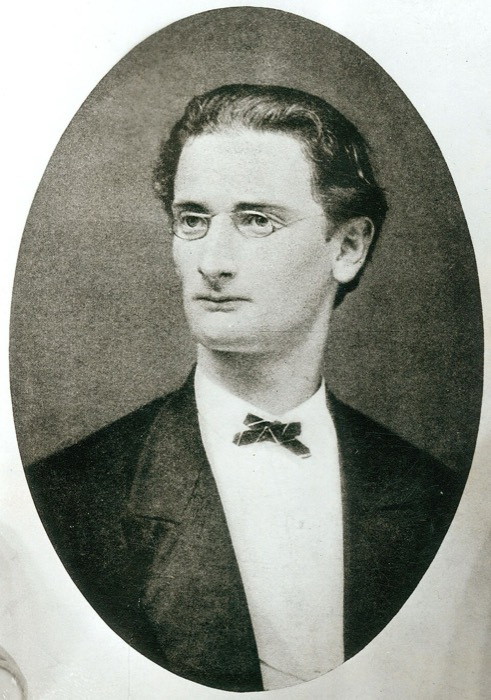
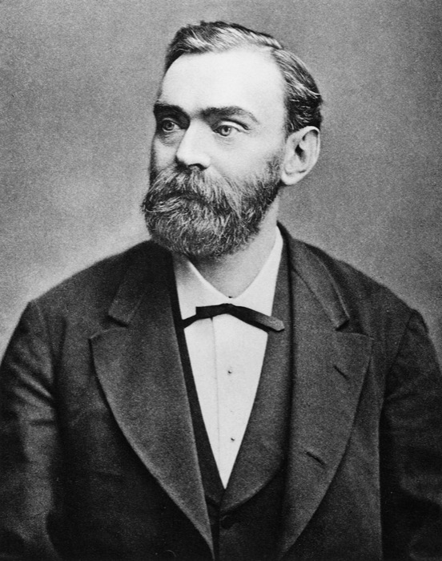
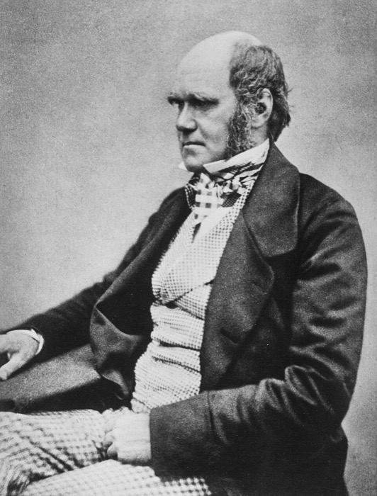
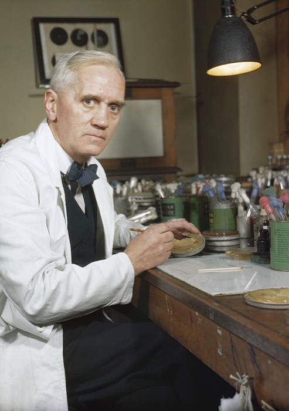
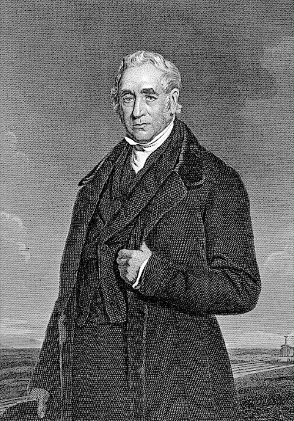
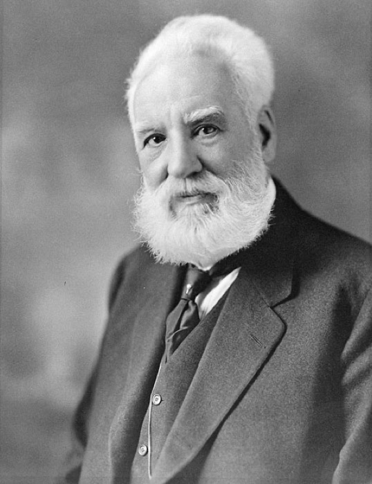

Choose the correct verb and the correct tense form for each sentence.
1. She
a bad cold last winter and missed a whole week of school.
2. It's time we
rid of all these old textbooks — nobody uses them anymore.
3. My cousin
married last summer in a small ceremony by the sea.
4. He
lost on his way to the interview and arrived twenty minutes late.
5. Please
in touch with me as soon as you land at the airport.
6. I'm not
ready yet — give me five more minutes!
7. She finally
a job at the local hospital after months of searching.
8. You need to
permission from your parents before you can go on the school trip.
9. His manager has been
a lot of pressure on him to finish the project early.
10. After a long shift, all she wanted to do was
her feet up and relax.
Task 4 — Make, Do, Take, Give, Put or Get?
Choose the correct verb for each sentence.
1
It's hard to ___ a real difference when the system resists change so strongly.
2
Every Saturday morning, the children have to ___ the housework before they're allowed out to play.
3
As team leader, you must ___ responsibility for your group's results, good or bad.
4
Could you ___ an example to help me understand the rule better?
5
The council finally decided to ___ an end to the noisy building work at night.
6
That constant dripping tap really starts to ___ on your nerves after a while.
7
Winning the scholarship pushed her to ___ an even greater effort this term.
8
Whatever the task is, you should always ___ your best and never give up.
9
Smart shoppers know exactly how to ___ advantage of the January sales.
10
Could a stranger really ___ you a lift all the way into town?
11
Her strict parents always ___ pressure on her to get top grades.
12
It takes time to ___ used to living in a completely new country.
Task 5 — Grammar Rule
📐 Prepositions of Time & Place: AT / ON / IN / FOR
AT marks a point — a point in time (at once, at first), a point in space (at home, at the door), or a point on a scale (at least, good at).
ON marks a surface or a line — literally (on the table) or figuratively (on time, on one's way, based on).
IN marks an area or a state — somewhere you are inside of, whether that's a real space, a period of time, or an abstract situation (in fact, in general, in advance, interested in, succeed in, in danger, in a hurry).
FOR marks purpose, exchange or a target — what something is done in order to get, in exchange for, or aimed at (wait for, apply for, responsible for, famous for, for a while, for the first time).
AT
at last / at once
at least / at first
at home
surprised at
good / bad at
laugh at
arrive at (a place)
ON
on one's way
on purpose
on time
on foot
depend / rely on
insist on
concentrate on
IN
in the midst of
in this case / in fact
in charge of
interested in
in advance
in general
believe in / result in
FOR
difficult for
famous / known for
responsible for
for the first time
apologise for
wait / search for
for a while / for good
Task 6 — In, On, At or For?
Choose the correct preposition for each sentence.
1
I'm sorry, I wasn't looking — I didn't mean to laugh ___ you.
2
We arrived just ___ time, five minutes before the gates closed.
3
___ fact, she'd already finished the report before the deadline.
4
He's known ___ his generosity as much as his talent.
5
You should always aim ___ accuracy rather than speed in your writing.
6
You can always depend ___ her to keep her word.
7
The country was ___ the midst of a political crisis.
8
She apologised ___ arriving so late to the meeting.
9
Ticket prices are ___ least twice as high as they were last year.
10
He always insists ___ paying for dinner when we go out.
Task 7 — Choose the Correct Answer
From The Mysterious Affair at Styles by Agatha Christie.
1
John noticed my surprise ___ the news of his mother's remarriage and smiled rather ruefully.
2
Their country-place, Styles Court, had been purchased by Mr. Cavendish early ___ their married life.
3
I can tell you, Hastings, it's making life jolly difficult ___ us.
4
Thus it came about that, three days later, I descended from the train at Styles St. Mary, an absurd little station, with no apparent reason for existence, perched up ___ the midst of green fields and country lanes.
5
The fellow must be ___ least twenty years younger than she is!
6
The French window swung open a little wider, and a handsome white-haired old lady, with a somewhat masterful cast of features, stepped out of it ___ to the lawn.
7
It was a still, warm day ___ early July.
8
Come on then, you've done enough gardening ___ today.
9
Mrs. Cavendish, however, was a lady who liked to make her own plans, and expected other people to fall in with them, and ___ this case she certainly had the whip hand, namely: the purse strings.
10
He had qualified as a doctor but early relinquished the profession of medicine, and lived ___ home while pursuing literary ambitions; though his verses never had any marked success.
Task 8 — Watch & Retell
Watch the video, then retell what happened using at least 7 prepositional phrases from Tasks 5–7 (e.g. at first, in fact, on purpose, for a while…).
0 characters
Task 1 — Rules
🔊 Every English word with two or more syllables has one main stressed syllable — it sounds louder, longer and higher. Below, the stressed syllable is written in CAPITALS and underlined.
1
Two-syllable words
Nouns & adjectives → stress the first syllable. Verbs → stress the second syllable.
How many syllables does each word have? Type the number. Careful — the spelling is misleading in every one of these.
💡 Example: Wednesday → 2 syllables — WENZ-day (the first d is silent)
1queue
2rhythm
3vehicle
4campaign
5recipe
6aisle
7genuine
8cooperate
9naive
10parliament
11exhausted
12bureaucracy
Task 2 — Mark the Stress Pattern
Type the stress pattern for each word using O for a stressed syllable and o for an unstressed one.
💡 Example: photography → oOoo — pho-TOG-ra-phy
1colleague
2receipt
3mortgage
4champagne
5subtle
6accurate
7dilemma
8hazardous
9volunteer
10reluctant
11persistent
12guarantee
13ambiguous
14considerate
15extravagant
16pneumonia
17significant
18confidential
19influential
20controversial
Task 3 — Noun or Verb Stress?
Each sentence uses the same word twice — once as a noun, once as a verb, in either order. Choose the correct stress pattern for both.
1. Unless the council agrees to
extra parking, nobody will get a
for the festival.
2. Every single
in the archive had been damaged by damp, so the museum decided to
the collection digitally.
3. Before you
the trophy, check that the
for the runner-up has arrived too.
4. Nobody dared to
when the guide picked up the fragile
with bare hands.
5. Physics was never my strongest
, and I don't see why the exam board should
us to three hours of it.
6. Metal rails
in cold weather, which is why the railway
specifies special expansion joints.
7. The choir's
on tour was impeccable, even when a student had to
the final concert.
8. A ten-percent
in rent sounds small, but landlords who
prices every year soon lose tenants.
9. Farms in the valley
most of the region's fruit, and their
fills the Saturday market.
10. Little
was made in the first hour; the talks only began to
after lunch.
11. Students will
outside parliament tomorrow — the third
this month.
12. Countries that
oil depend on that single
more than they would like to admit.
Task 1 — Quick Test
How much do you remember about the people from Lesson 1? Choose the correct answer.
1
Who wrote what is considered the world's first computer algorithm, in 1843?
2
Ada Lovelace's father was a famous…
3
Which machine did Charles Babbage design in 1822 to calculate mathematical tables without human error?
4
Where did Alan Turing lead the team that cracked the German Enigma code?
5
Whose portrait appears on the British £50 note?
6
Leonard Bernstein's musical West Side Story is a modern retelling of which play?
7
In 1958 Bernstein became the first American-born conductor to lead which orchestra?
8
The Tony Awards — the top honour in American theatre — are named after…
9
Who are the two figures in Grant Wood's painting American Gothic?
10
Which painting shows four people in a late-night New York diner?
11
James Whistler sued the critic John Ruskin for libel in 1878. What did he win?
12
Which writer created the clueless aristocrat Bertie Wooster and his brilliant valet Jeeves?
📖 These scientists, engineers and inventors are all part of English-language culture — several of them gave their names to units, prizes and everyday words. Read about them and be ready to discuss: Which discovery changed everyday life the most?

Journalism
Joseph Pulitzer
Famous forThe Pulitzer Prize — the top award in American journalism, literature and music
Born in Hungary in 1847, he emigrated to the USA at 17 and fought in the American Civil War. He became a newspaper publisher and turned the New York World into the most widely read paper in the country, mixing serious investigative reporting with sensational headlines — a style later called "yellow journalism". In his will he left money to Columbia University to found a school of journalism and the Pulitzer Prizes, first awarded in 1917. He also organised a campaign that raised the money for the pedestal of the Statue of Liberty.

Chemistry
Alfred Nobel
Famous forInventing dynamite — and founding the Nobel Prizes
Swedish chemist, engineer and businessman (1833–1896). After several deadly accidents with the unstable explosive nitroglycerine — one of which killed his younger brother — he found a way to make it safe to handle and patented it as dynamite in 1867. It made him extremely rich. When a French newspaper mistakenly printed his obituary with the headline "The merchant of death is dead", he was shocked at how he would be remembered. He rewrote his will and left almost all his fortune to create the Nobel Prizes for physics, chemistry, medicine, literature and peace, first awarded in 1901.
Physics
Isaac Newton
Famous forThe law of gravity and the three laws of motion
English mathematician and physicist (1643–1727), often called the most influential scientist who ever lived. In 1687 he published the Principia, which explained that the same force — gravity — makes an apple fall to the ground and keeps the Moon in orbit around the Earth. He also worked out the three laws of motion, invented calculus (at the same time as Leibniz), and showed with a prism that white light is made of all the colours of the rainbow. He built the first reflecting telescope and later ran the Royal Mint, where he chased down counterfeiters. The story of the falling apple is one he told himself in old age.

Biology
Charles Darwin
Famous forThe theory of evolution by natural selection
English naturalist (1809–1882). At 22 he joined a five-year round-the-world voyage on HMS Beagle. On the Galápagos Islands he noticed that finches on different islands had different beaks suited to the food available there. This led him to his big idea: living things change over generations because individuals with useful features survive and have more offspring — natural selection. He waited more than 20 years before publishing On the Origin of Species in 1859 because he knew the idea would be controversial. He is buried in Westminster Abbey next to Isaac Newton, and his face was on the British £10 note from 2000 to 2018.
Physics
Michael Faraday
Famous forDiscovering electromagnetic induction — the principle behind the electric motor and generator
English scientist (1791–1867) who had almost no formal education: he was the son of a blacksmith and started work at 14 as a bookbinder's apprentice, reading the science books he was binding. In 1831 he discovered electromagnetic induction — that moving a magnet near a wire produces an electric current — the principle behind every electric generator and transformer in the world. He also built the first electric motor and gave the words electrode, anode and ion to science. He started the famous Royal Institution Christmas Lectures for young people, which are still broadcast on British TV every year. The unit of electrical capacitance, the farad, is named after him.

Medicine
Alexander Fleming
Famous forDiscovering penicillin, the first antibiotic
Scottish doctor and microbiologist (1881–1955). In September 1928 he came back from holiday to his untidy laboratory in London and noticed that a mould had grown on one of his dishes of bacteria — and that the bacteria around the mould had died. The mould was Penicillium, and the substance it produced, penicillin, became the world's first antibiotic. It was developed into a usable medicine by Howard Florey and Ernst Chain in the 1940s, saved millions of lives in World War II, and the three men shared the Nobel Prize in Medicine in 1945. Fleming often said: "One sometimes finds what one is not looking for."
Engineering
James Watt
Famous forImproving the steam engine — and giving his name to the unit of power, the watt
Scottish engineer and inventor (1736–1819). Early steam engines wasted huge amounts of fuel, so while repairing one in 1765 Watt designed a separate condenser that made the engine roughly four times more efficient. With his business partner Matthew Boulton he built engines that powered mills, mines and factories across Britain — a key step in the Industrial Revolution. To sell his engines he compared them to horses, inventing the term horsepower. In 1882 the unit of power, the watt (as in a 60-watt light bulb), was named in his honour. Contrary to the popular story, he did not invent the steam engine after watching a kettle boil.

Engineering
George Stephenson
Famous for"The Father of Railways" — building the first public passenger railway
English engineer (1781–1848), born into a poor mining family near Newcastle; he could not read until he was 18 and paid for night-school lessons himself. He built his first steam locomotive in 1814 to pull coal wagons, and in 1825 opened the Stockton & Darlington Railway, the first public railway to use steam engines. In 1829 his locomotive Rocket, built with his son Robert, won the Rainhill Trials at nearly 30 mph and was chosen for the Liverpool & Manchester Railway — the world's first inter-city passenger line. The distance between the rails he used, 4 ft 8½ in, is still the standard gauge for most of the world's railways today.

Invention
Alexander Graham Bell
Famous forInventing the telephone (patented in 1876)
Born in Edinburgh, Scotland, in 1847; later lived in Canada and the USA. His mother and his wife were both deaf, and he spent his life as a teacher of deaf people — he considered this his real work. His experiments with transmitting speech by electricity led to the telephone; the first words spoken on it, on 10 March 1876, were to his assistant: "Mr Watson, come here, I want to see you." He founded the Bell Telephone Company and was one of the founders of the National Geographic Society. He refused to have a telephone in his own study because he found it a distraction. The decibel, the unit of sound level, is named after him.